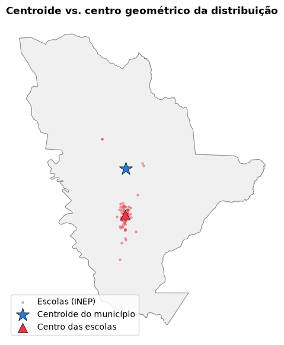
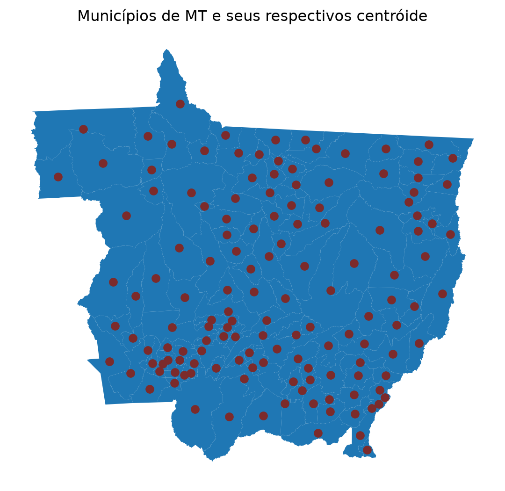
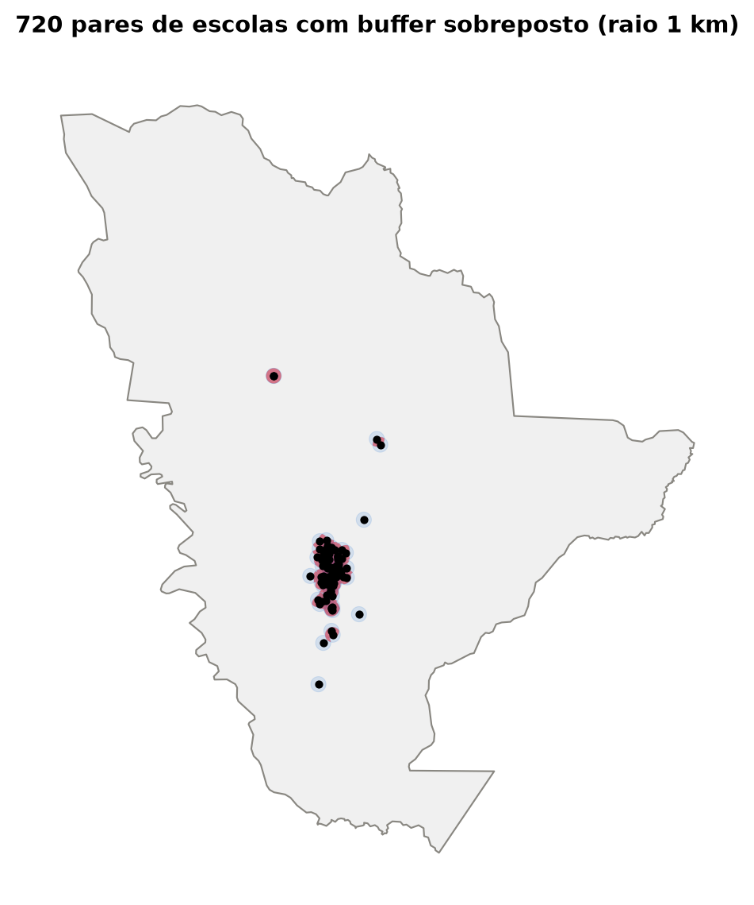
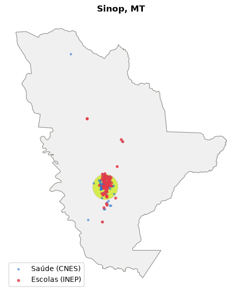
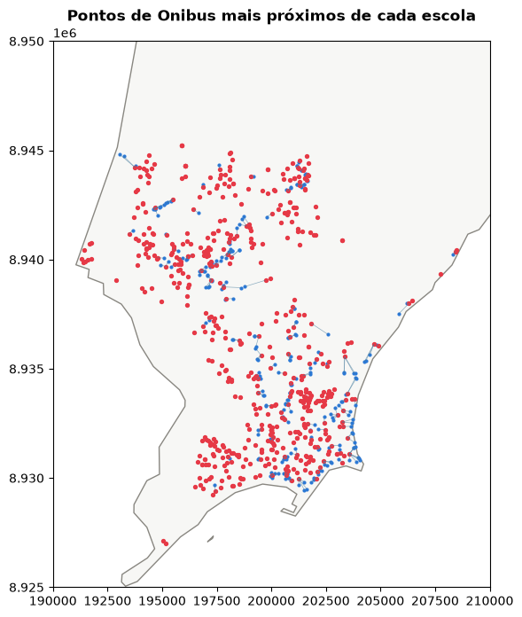
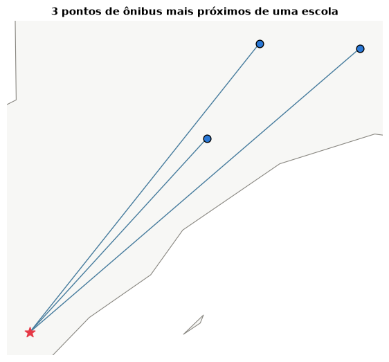
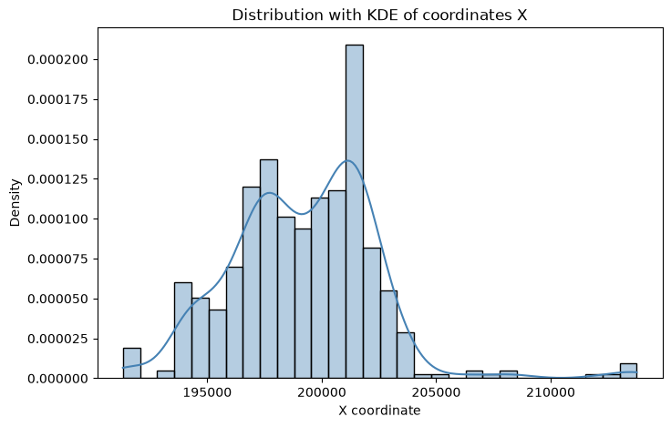
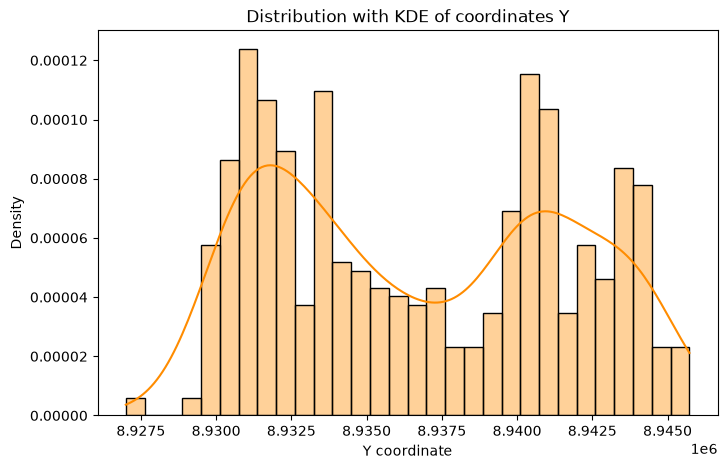
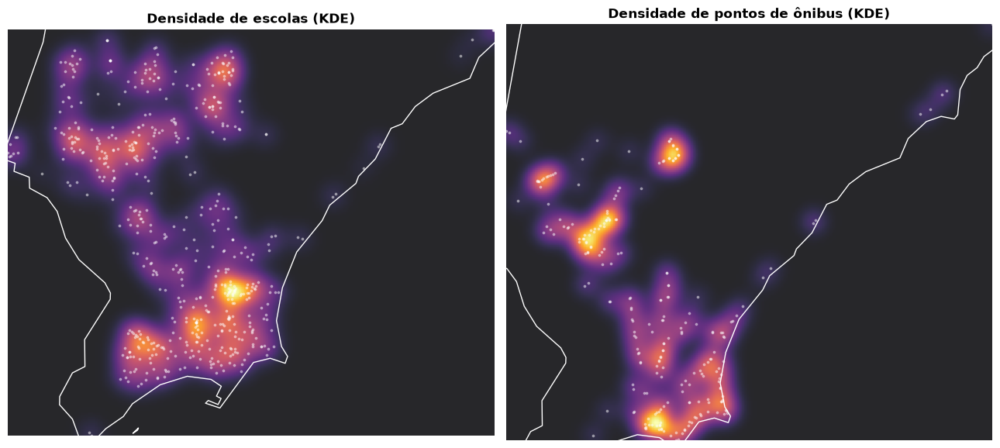
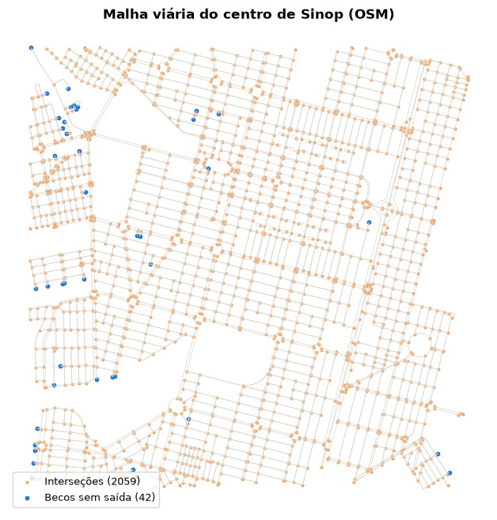

Relações topológicas, distância, joins espaciais e agregação
Emanuel Goulart — today
Prefere rodar tudo num notebook em vez de acompanhar pelo site? abre o esse notebook no colab.
Análise Espacial em Dados Vetoriais
Esse notebook explora as operações espaciais mais usadas no dia a dia como as relações topológicas, distância, joins espaciais, agregação, zoneamento e transformações geométricas.
Para o nosso estudo de casa, vamos utilizar a cidade de Sinop no Mato Grosso, combinando duas fontes de dados:
geobr — escolas (INEP) e estabelecimentos de saúde (CNES), dados oficiais e já geolocalizados.
OpenStreetMap (via osmnx) — a malha viária, para explorar interseções e conectividade.
Escolhemos Sinop arbitrariamente, é uma cidade média, longe do eixo Rio-São Paulo que domina a maioria dos exemplos de GIS por aí. Sinta-se livre pra trocar o code_muni abaixo pela sua própria cidade e rodar tudo de novo.
Code
code_muni =5107909# Sinop, MTCRS_PROJETADO ="EPSG:31981"# SIRGAS2000 / UTM zone 21S sinop = geobr.read_municipality(code_muni=code_muni, year=2020)schools = geobr.read_schools(year=2020, code_muni=code_muni)health = geobr.read_health_facilities(date=202304, code_muni=code_muni)# Vamos já projetar elas para a nossa zona UTM 21 Scode_muni =5107909# Sinop, MTCRS_PROJETADO ="EPSG:31981"# SIRGAS2000 / UTM zone 21S sinop_proj = sinop.to_crs(CRS_PROJETADO)schools_proj = schools.to_crs(CRS_PROJETADO)health_proj = health.to_crs(CRS_PROJETADO)print(f"{len(schools)} escolas, {len(health)} estabelecimentos de saúde")
import foliumm = folium.Map( location=[sinop.iloc[0].geometry.centroid.y, sinop.iloc[0].geometry.centroid.x], zoom_start=12)folium.GeoJson( sinop, name="Limite do município", style_function=lambda _: {"fillOpacity": 0, "color": "#333333", "weight": 2},).add_to(m)rede_map = {1: "Federal", 2: "Estadual", 3: "Municipal", 4: "Privada"}cores_rede = {1: "#2a78d6", 2: "#e63946", 3: "#2a9d8f", 4: "#f4a261"}schools_map = schools.copy()schools_map["rede"] = schools_map["tp_dependencia"].map(rede_map)# aqui adicionamos as escolas no folium folium.GeoJson( schools_map, name="Escolas (Dados do INEP)", marker=folium.CircleMarker(radius=6, fill=True), style_function=lambda feat: {"fillColor": cores_rede.get(feat["properties"]["tp_dependencia"], "#999999"),"color": "white","weight": 0.6,"fillOpacity": 0.8, }, tooltip=folium.GeoJsonTooltip( fields=["name_school", "rede"], aliases=["Escola:", "Rede:"], localize=True, ),).add_to(m)# CNES tp_unidade cobre dezenas de códigos. mapeamos (claude mapeou) os que aparecem em Sinop com as respectivas representacoestipo_unidade_map = {2: "Centro de Saúde/UBS", 4: "Policlínica", 5: "Hospital Geral",22: "Consultório Isolado", 36: "Clínica/Centro de Especialidade",39: "SADT Isolado", 40: "Unidade Móvel Pré-Hospitalar", 43: "Farmácia",50: "Vigilância Epidemiológica", 68: "Central de Notificação/Regulação",69: "Central de Regulação Médica de Urgências", 70: "Central de Regulação do Acesso",72: "Centro de Atenção Psicossocial", 73: "Centro de Apoio à Saúde da Família",74: "Pronto Atendimento", 77: "Central de Regulação de Alta Complexidade",80: "Laboratório de Saúde Pública", 81: "Central de Gestão em Saúde",84: "Central de Abastecimento", 85: "Centro de Imunização",}# aqui uma funcao map para corresponder de indice a nome da unidade de saudehealth_map = health.copy()health_map["tipo"] = health_map["tp_unidade"].map(tipo_unidade_map).fillna("Outro")folium.GeoJson( health_map, name="Saúde (CNES)", marker=folium.CircleMarker(radius=4, fill=True), style_function=lambda _: {"fillColor": "#2a78d6","color": "white","weight": 0.6,"fillOpacity": 0.6, }, tooltip=folium.GeoJsonTooltip( fields=["no_fantasia", "tipo"], aliases=["Estabelecimento:", "Tipo:"], localize=True, ),).add_to(m)folium.LayerControl().add_to(m)m
Make this Notebook Trusted to load map: File -> Trust Notebook
Operações Geométricas
Operações geométricas refere-se a um conjunto de métodos que são utlizados para analisar e processar feições geométricas. Ele portanto corrobora em responder como dois ou mais objectos geograficos se relacionam entre si? eles se sobrepoem? se tocam? alguma intersecção? quão longe estão entre eles?
Centroid
Centroide é o centro de massa da geometria, seja ela linha, polígono ou geometry collection. Extrair esse centróide é muito útil em diversos casos, como por exemplo para localizar ‘labels’ na figura, para servir de base em operações espaciais de outros polígonos e etc. Se você tentar calcular o centróide em um CRS não projetado, geopandas calcula mesmo assim, mas avisa que o resultado pode estar errado: grau não é uma unidade de distância uniforme, então o “centro de massa” calculado direto em lat/lon fica levemente deslocado do centro geométrico real. Os dados precisam estar projetados em um sistema de coordenadas projetado (UTM por exemplo) pra esse cálculo fazer sentido de verdade.
Code
centroide_sinop = sinop_proj.geometry.centroid.iloc[0]centro_escolas = schools_proj.geometry.union_all().centroid# de volta pro CRS geográfico só pra plotar junto com o restocentroide_sinop_geo = gpd.GeoSeries([centroide_sinop], crs=CRS_PROJETADO).to_crs(sinop.crs).iloc[0]centro_escolas_geo = gpd.GeoSeries([centro_escolas], crs=CRS_PROJETADO).to_crs(sinop.crs).iloc[0]fig, ax = plt.subplots(figsize=(7, 7))sinop.plot(ax=ax, color="#f0f0f0", edgecolor="#898781", linewidth=0.8)schools.plot(ax=ax, markersize=6, color="#e63946", alpha=0.35, label="Escolas (INEP)")ax.scatter(centroide_sinop_geo.x, centroide_sinop_geo.y, marker="*", s=280, color="#2a78d6", edgecolor="black", linewidth=0.5, zorder=5, label="Centroide do município")ax.scatter(centro_escolas_geo.x, centro_escolas_geo.y, marker="^", s=140, color="#e63946", edgecolor="black", linewidth=0.5, zorder=5, label="Centro das escolas")ax.legend(loc="lower left")ax.set_title("Centroide vs. centro geométrico da distribuição", fontsize=12, fontweight="bold")ax.set_axis_off()plt.show()

Figure 1: Centroide do polígono de Sinop (estrela) e centro geométrico da distribuição de escolas (triângulo) – ambos calculados já em CRS projetado.
Code
muni = geobr.read_municipality(year=2020)# projetando no SIRGAS 2000 UTM 23 Smuni = muni.to_crs('EPSG:31983')muni_mt = muni.loc[muni['abbrev_state']=='MT']## project to UTM 22Smuni_mt['centroide'] = muni_mt.geometry.centroidfig, ax = plt.subplots(figsize=(7,7))muni_mt.plot(ax=ax)muni_mt.geometry.centroid.plot(ax=ax,color="#7c2b2b")ax.set_axis_off()ax.set_title('Municípios de MT e seus respectivos centróide')plt.show()

Figure 2: Centroide dos municipios de mato grosso
Buffer
Buffer é uma operação geométrica que cria uma zona ao redor de uma dada geometria, geralmente representando uma distância (raio de cobertura, zona de segurança, área de influência). Combinar buffer com interseção responde perguntas do tipo “que áreas estão cobertas mais de uma vez?” — por exemplo, existe algum ponto em Sinop dentro do raio de 1 km de duas escolas ao mesmo tempo?
Code
buffers = schools_proj[["code_school", "geometry"]].copy()buffers["geometry"] = buffers.buffer(1000) # 1 km de raio# cruza os buffers com eles mesmos; code_school_1 < code_school_2 evita# contar a interseção de um buffer com ele mesmo e duplicar cada par (A∩B == B∩A)pares = gpd.overlay(buffers, buffers, how="intersection")pares = pares[pares["code_school_1"] < pares["code_school_2"]]cobertura_dupla = pares.union_all()# zoom na região onde as sobreposições acontecem, em vez do município (~60 km) inteiro# minx, miny, maxx, maxy = cobertura_dupla.bounds# folga = 1500fig, ax = plt.subplots(figsize=(7, 7))sinop_proj.plot(ax=ax, color="#f0f0f0", edgecolor="#898781", linewidth=0.8)buffers.plot(ax=ax, color="#2a78d6", alpha=0.15, edgecolor="#2a78d6", linewidth=0.4)gpd.GeoSeries([cobertura_dupla], crs=CRS_PROJETADO).plot(ax=ax, color="#e63946", alpha=0.6)schools_proj.plot(ax=ax, markersize=8, color="black")# ax.set_xlim(minx - folga, maxx + folga)# ax.set_ylim(miny - folga, maxy + folga)ax.set_title(f"{len(pares)} pares de escolas com buffer sobreposto (raio 1 km)", fontsize=11, fontweight="bold")ax.set_axis_off()plt.show()

Figure 3: Buffer de 1 km ao redor de cada escola, no núcleo urbano de Sinop. Em vermelho, as regiões cobertas por duas ou mais escolas ao mesmo tempo.
Code
schools_buffer_geo = buffers.to_crs("EPSG:4326")health_buffers = health_proj[["co_cnes", "no_fantasia", "geometry"]].copy()health_buffers["geometry"] = health_buffers.buffer(1000) # 1 km de raiohealth_buffers_geo = health_buffers.to_crs("EPSG:4326")## create a new folium map m = folium.Map( location=[sinop.iloc[0].geometry.centroid.y, sinop.iloc[0].geometry.centroid.x], zoom_start=13,)buffers_geo = buffers.to_crs("EPSG:4326") # reprojetando para um sistema WGS84 - GEOGRAFICOfolium.GeoJson( buffers_geo, name="Buffers (1 km)", style_function=lambda _: {"fillColor": "#2a78d6", "color": "#2a78d6", "weight": 0.5, "fillOpacity": 0.15, },).add_to(m)# aqui adicionamos as escolas no folium folium.GeoJson( schools_map, name="Escolas (Dados do INEP)", marker=folium.CircleMarker(radius=6, fill=True), style_function=lambda feat: {"fillColor": cores_rede.get(feat["properties"]["tp_dependencia"], "#999999"),"color": "white","weight": 0.6,"fillOpacity": 0.8, }, tooltip=folium.GeoJsonTooltip( fields=["name_school", "rede"], aliases=["Escola:", "Rede:"], localize=True, ),).add_to(m)folium.LayerControl().add_to(m)m
Make this Notebook Trusted to load map: File -> Trust Notebook
União e Dissolve
Algumas operações serve para unir as geometrias ou dissolve-las a um nível de agregação para formar outros. Você pode dissolver as geometrias das cidades para formar um estado ou região, por exemplo. Olhando de perto, union_all() funde todas as geometrias em única geometria. Ele faz isso sem olhar pra nenhum atributo. Já o dissolve(by=...) faz a mesma fusão por baixo dos panos, mas primeiro agrupa as linhas pelo dado atributo. As duas funções tem como parâmetro o método method: "unary" (padrão, robusto, funciona mesmo com geometrias sobrepostas) ou "coverage" ,bem mais rápido, mas só vale pra polígonos que já formam uma cobertura sem sobreposição, tipo limites administrativos vizinhos, se você usa as geometrias do CAR aqui vai ser encrenca.
Code
dependencia_map = {1: "Federal", 2: "Estadual",3: "Municipal", 4: "Privada"}schools_proj["rede"] = schools_proj["tp_dependencia"].map(dependencia_map)influencia = schools_proj[["rede", "geometry"]].copy()influencia["geometry"] = influencia.buffer(400)uniao_total = influencia.union_all()# aqui dissolvendo pelos tipos de escoladissolve_por_rede = influencia.dissolve(by="rede").reset_index()# os buffers (400 m) somem de vista numa figura do município inteiro (~60 km) --# damos zoom no maior na area central da cidade (onde contem mais pontos) resultante da união, que é exatamente o núcleo# urbano denso (as escolas isoladas na zona rural viram círculos minúsculos à parte)maior_blob =max(uniao_total.geoms, key=lambda g: g.area)minx, miny, maxx, maxy = maior_blob.boundsfolga =500fig, axes = plt.subplots(1, 2, figsize=(13, 6))for ax in axes: sinop_proj.plot(ax=ax, color="#f0f0f0", edgecolor="#898781", linewidth=0.6) ax.set_xlim(minx - folga, maxx + folga) ax.set_ylim(miny - folga, maxy + folga) ax.set_axis_off()gpd.GeoSeries([uniao_total], crs=CRS_PROJETADO).plot(ax=axes[0], color="#e63946", alpha=0.6)axes[0].set_title("Union All")dissolve_por_rede.plot(ax=axes[1], column="rede", categorical=True, cmap="Set2", alpha=0.75, legend=True, legend_kwds={"title": "Rede", "loc": "lower left"})axes[1].set_title("Dissolve by Tipos de Escola")plt.tight_layout()plt.show()
Figure 4: Área de influência (buffer de 400 m) de cada escola, no núcleo urbano de Sinop. À esquerda, union_all() funde tudo numa geometria só. À direita, dissolve(by=‘rede’) agrupa antes de unir, preservando a rede de ensino.
O convex hull é o menor polígono convexo que contém todos os pontos de um conjunto. Imagine esticar um elástico em volta de todos os pontos e deixar ele encolher até tocar só nos mais externos. Vamos ilustrar isso a partir dos pontos das escolas de Sinop.
Figure 5: Convex hull das escolas de Sinop: o menor polígono convexo que contém todos os pontos.
Relações topológicas
Relações topológicas servem para compreender como duas geometrias se relacionam no espaço: intersects (encosta em qualquer parte), within (está totalmente dentro), touches (encosta só na borda, sem sobrepor), disjoint (não tem relação nenhuma). Repare que intersects é simétrica (se X intersecta Y, Y intersecta X), mas within/contains não são.
Vamos usar isso pra classificar as escolas de Sinop em urbanas (dentro de um raio de 2,5 km do centro) e rurais (fora dele).
Code
# estabelecendo um ponto no centro de Sinopcentro = gpd.GeoSeries( [gpd.points_from_xy([-55.5089], [-11.8642])[0]], crs="EPSG:4326").to_crs(CRS_PROJETADO)area_urbana = centro.buffer(5000).iloc[0] # 5 km, já em metros## aqui a analise topologica## se a escola esta dentro da area urbana ( nosso buffer the 5km) entao urbana, senao rural schools_proj["zona"] = np.where(schools_proj.within(area_urbana), "urbana", "rural")# printa o numero de escolas na area urbana print(schools_proj["zona"].value_counts())
zona
urbana 66
rural 12
Name: count, dtype: int64
Code
## Agora vamos plots fig, ax = plt.subplots(figsize=(7, 7))# delineacao do municipio sinop.plot(ax=ax, color="#f0f0f0", edgecolor="#898781", linewidth=0.8)# area_urbana é um shapely Polygon "puro", não um GeoDataFrame# por isso não tem .plot(); e está em CRS_PROJETADO (metros), então reprojetamos de volta# pro CRS geográfico de sinop/schools/health antes de plotar, senão as escalas não batemarea_urbana_geo = gpd.GeoSeries([area_urbana], crs=CRS_PROJETADO).to_crs(sinop.crs).iloc[0]# o truque pra quando nao eh geopandas, ou entao converta para geopandasax.fill(*area_urbana_geo.exterior.xy, color="#cdea0eb9", edgecolor="#d4caa7", linewidth=0.6)health.plot(ax=ax, markersize=6, color="#2a78d6", alpha=0.5, label="Saúde (CNES)")schools.plot(ax=ax, markersize=10, color="#e63946", alpha=0.8, label="Escolas (INEP)")ax.legend(loc="lower left")ax.set_title("Sinop, MT", fontsize=12, fontweight="bold")ax.set_axis_off()plt.show()

Não mosca!
Se você ainda não está a vontade com as relações topológicas, então da uma olhada na nossa aula de python+GIS, onde olhamos com muito mais calma e a fundo essas relações. Aula 1 e Aula 2. Python+GIS
Transformações afins
Rotação, escala, translação e cisalhamento — operações que distorcem uma geometria sem recalcular nada a partir dos dados originais, só aplicando uma matriz na geometria já existente. Útil pra ajustar geometrias mal-alinhadas ou simplesmente pra entender o que cada operação faz:
Figure 6: A mesma geometria (limite de Sinop): original, rotacionada 45° e escalada pela metade — sempre em torno do próprio centro.
Relações de distância
Diferente das relações topológicas que são por natureza boleanas (verdadeiro/falso), relações de distância são contínuas. Além disso, existem algumas nuances que precisam ser consideradas dependendo do tipo de vetor que estamos analisando. Certamento a distancia entre dois points é a famosa distância euclideana, muito já batida e amassada pela algebra linear.
Source:Wikipedia - Euclidean Distance
Contudo, observamos a distancia entre duas retas, ou a distancia entre um ponto e um polígono, e então a nuance toma conta. Vamos considerar que a distância entre um ponto e um polígono mais próximas entre os dois elementos.
Source:Arcgis - Arcmap Documentacao
Mão na massa:
qual a distância de cada escola até o estabelecimento de saúde mais próximo?
Code
## Importante aqui, olha para a reducao utilizando o minimodist_para_saude = schools_proj.geometry.apply(lambda pt: health_proj.distance(pt).min())print(f"Distância média até a saúde mais próxima: {dist_para_saude.mean():.0f} m")print(f"Escola mais isolada: {dist_para_saude.max():.0f} m")print(f"Escola mais proxima: {dist_para_saude.min():.0f} m")
Distância média até a saúde mais próxima: 732 m
Escola mais isolada: 16743 m
Escola mais proxima: 2 m
# gpd.sjoin junta atributos com base numa relação espacial (within predicado usado aqui),saude_buffers = health_proj[["no_fantasia", "geometry"]].copy()saude_buffers["geometry"] = saude_buffers.buffer(1000) # 1 km de raio de coberturaescolas_cobertas = gpd.sjoin(schools_proj, saude_buffers, predicate="within")print(f"{escolas_cobertas['code_school'].nunique()} de {len(schools_proj)} escolas estão "f"dentro do raio de cobertura de pelo menos um estabelecimento de saúde")escolas_cobertas[["name_school", "no_fantasia"]].head()
74 de 78 escolas estão dentro do raio de cobertura de pelo menos um estabelecimento de saúde
name_school
no_fantasia
0
ESCOLA CENECISTA SANTA ELISABETE
SINOP MED
0
ESCOLA CENECISTA SANTA ELISABETE
CARRERA
0
ESCOLA CENECISTA SANTA ELISABETE
SOMA PSICOLOGIA
0
ESCOLA CENECISTA SANTA ELISABETE
G S SERVICOS MEDICOS
0
ESCOLA CENECISTA SANTA ELISABETE
AGENCIA TRANSFUSIONAL HEMOSAN SINOP
Joins espaciais por distância
Um join espacial funciona como um join de atributos (tema batido para quem conhece tabelas relacionais), só que o critério de join é uma relação espacial em vez de uma chave em comum. sjoin_nearest responde a pergunta do capítulo anterior, mas devolve um GeoDataFrame, com a opção de limitar a um raio máximo (max_distance), o que é útil pra não juntar pontos longe demais de fazer sentido:
Code
schools_com_saude = gpd.sjoin_nearest( schools_proj, health_proj[["geometry", "no_fantasia"]], distance_col="dist_saude_mais_proxima", max_distance=5000, # não junta nada além de 5 km)schools_com_saude[["name_school", "no_fantasia", "dist_saude_mais_proxima"]].sort_values("dist_saude_mais_proxima", ascending=False).head(5)
name_school
no_fantasia
dist_saude_mais_proxima
9
EMEB SILVANA
UNIDADE DE SAUDE DA FAMILIA ENDIRA PICHLER TES...
4790.005070
35
EE BOM JARDIM
UNIDADE BASICA DE SAUDE SAO FRANCISCO
1925.651095
63
EMEI CAMPING CLUBE
UBS CAMPING CLUB
909.113620
42
EMEI GERSON PIRES DA SILVA
UNIDADE DE SAUDE DA FAMILIA JARDIM IBIRAPUERA
773.870893
10
EMEB UILIBALDO VIEIRA GOBBO
UNIDADE DE SAUDE DA FAMILIA PARQUE DAS ARARAS
626.982180
Agregação espacial
Agregação espacial resume valores de um objeto (o “alvo”) agrupando pela geometria de outro (a “fonte”). A geometria da fonte é quem define os grupos, e o resultado herda a geometria dela, não a do alvo. Vamos agregar pelo grupo mais simples que já temos: urbana vs. rural.
Code
resumo_zona = ( schools_com_saude .groupby("zona") .agg( n_escolas=("code_school", "count"), dist_media_saude=("dist_saude_mais_proxima", "mean"), dist_max_saude=("dist_saude_mais_proxima", "max"),# faca aqui a minima distancia ) .round(0))resumo_zona
n_escolas
dist_media_saude
dist_max_saude
zona
rural
10
979.0
4790.0
urbana
98
185.0
774.0
Nearest Neighboors (Vizinhos mais proximos)
Nearest Neighboors começa a tratar de um ponto importante da análise de dados espaciais, a relação de um ponto em respeito aos seus vizinhos.
Isso vem de uma noção construída pela primeira Lei da Geografia proposta por Tobler.
A Primeira Lei da Geografia
“Everything is related to everything else, but near things are more related than distant things.” — Waldo Tobler, 1970
Essa frase — hoje conhecida como a Primeira Lei da Geografia de Tobler — é basicamente a justificativa de por que “proximidade” é uma das perguntas mais básicas (e mais úteis) que dá pra fazer sobre dado espacial. “Qual é o ponto mais próximo?” parece trivial, mas é a base de coisas como: qual escola atende esse bairro, onde fica a parada de ônibus mais perto de casa, quão bem distribuído está um serviço público pela cidade.
Sinop tem poucos pontos de ônibus mapeados no OpenStreetMap – comum em cidades menores/mais novas, onde o mapeamento colaborativo de transporte público ainda é escasso. Pra essa análise de vizinho mais próximo, precisamos de uma malha de pontos de ônibus mais densa: trocamos para Maceió, Alagoas, mantendo as escolas via geobr.
Code
CRS_PROJETADO ="EPSG:31985"# SIRGAS2000 / UTM zone 25S - Maceió, ALcode_muni =2704302# Maceió, ALmaceio = geobr.read_municipality(code_muni=code_muni, year=2020)escolas = geobr.read_schools(year=2020, code_muni=code_muni)# pontos de ônibus, direto do OSM, dentro do polígono do municípiopontos_onibus = ox.features_from_polygon(maceio.iloc[0].geometry, tags={"highway": "bus_stop"})pontos_onibus = pontos_onibus[pontos_onibus.geom_type =="Point"].reset_index(drop=True)print(f"{len(pontos_onibus)} pontos de ônibus, {len(escolas)} escolas")
Figure 7: Maceió, AL: pontos de ônibus (OSM) e escolas (INEP/geobr).
O vizinho mais próximo
Antes de usar qualquer função pronta, vale entender o que “vizinho mais próximo” realmente significa: pra um ponto de ônibus, calcular a distância até todas as escolas, e pegar a menor.
Code
onibus_proj = pontos_onibus.to_crs(CRS_PROJETADO)escolas_proj = escolas.to_crs(CRS_PROJETADO)# aqui pega apenas o primeiro pontoum_ponto = onibus_proj.geometry.iloc[0]# calcula a distancia de todas as escolas para esse pontodistancias = escolas_proj.geometry.distance(um_ponto)print(f"Escola mais próxima desse ponto de ônibus: {distancias.min():.0f} m")print(f"Escola mais distante desse mesmo ponto: {distancias.max():.0f} m")
Escola mais próxima desse ponto de ônibus: 201 m
Escola mais distante desse mesmo ponto: 17994 m
Para um ponto é facil, agora como fazer isso pra todos os pontos de ônibus, um de cada vez contra todas as escolas? Parece ser na força bruta, certo?
Code
t0 = time.time()resultado_forca_bruta = [ escolas_proj.geometry.distance(pt).min() for pt in onibus_proj.geometry]tempo_forca_bruta = time.time() - t0print(f"Força bruta: {tempo_forca_bruta:.3f} s para {len(onibus_proj)}×{len(escolas_proj)} comparações")print(f"\nDistância média até a escola mais próxima: {round(np.mean(resultado_forca_bruta))}")
Força bruta: 0.022 s para 239×556 comparações
Distância média até a escola mais próxima: 282
Nesse tamanho ainda é rápido, mas repare que dobrar os pontos de ônibus e dobrar as escolas quadruplica o trabalho. Em cidades inteiras, com centenas de milhares de feições, isso vira um problema de verdade.
Dessa forma, vamos calcular o mesmo resultado de uma forma mais eficiente através do sjoin_nearest, que utiliza indice espacial.
Essa estrutura de índice espacial é resolvida com geopandas (uma R-tree, chamada STRtree por baixo dos panos), em vez de comparar contra todo mundo, ela organiza as geometrias de um jeito que permite descartar regiões inteiras do espaço de uma vez, sem nem calcular a distância pra elas.
Code
t0 = time.time()onibus_com_escola = gpd.sjoin_nearest( onibus_proj, escolas_proj[["geometry", "name_school"]], distance_col="dist_escola_mais_proxima",)tempo_indexado = time.time() - t0print(f"sjoin_nearest: {tempo_indexado:.3f} s")print(f"\nDistância média até a escola mais próxima: {onibus_com_escola['dist_escola_mais_proxima'].mean():.0f} m")
sjoin_nearest: 0.011 s
Distância média até a escola mais próxima: 282 m
Mesmo resultado da busca força bruta mas com a metade do tempo. Aqui fizemos isso apenas para 500 dados, imagina para 1 milhão de pontos de onibus.
NoteEmpates e duplicatas
Quando duas escolas estão à exatíssima mesma distância de um ponto de ônibus, sjoin_nearest devolve as duas — o resultado pode ter mais linhas do que o onibus_proj original. Vale sempre conferir:
Code
duplicatas = onibus_com_escola.index.duplicated().sum()print(f"Pontos de ônibus com mais de uma escola empatada como 'mais próxima': {duplicatas}")
Pontos de ônibus com mais de uma escola empatada como 'mais próxima': 0
Visualizando esses vizinhos mais próximos.
Uma forma direta de validar visualmente se o resultado faz sentido é desenhando uma linha do ponto de ônibus até a escola mais próxima. O sjoin_nearest só devolve o índice da escola casada (index_right), portanto pra desenhar a linha até ela, precisamos buscar a geometria dela de volta com um merge.
Code
escolas_proj[["geometry"]]
geometry
0
POINT (199543.637 8932250.319)
1
POINT (199427.746 8936482.908)
2
POINT (201121.503 8930934.686)
3
POINT (199307.603 8932927.969)
4
POINT (201341.767 8933549.947)
...
...
551
POINT (201503.821 8944178.511)
552
POINT (198951.231 8931750.787)
553
POINT (196048.017 8944279.171)
554
POINT (198324.469 8942956.51)
555
POINT (199848.114 8944129.299)
556 rows × 1 columns
Code
# sjoin_nearest devolve só o índice da escola; # buscamos a geometria dela de volta com um merge, o que gera geometry_x (ônibus) e geometry_y (escola)onibus_com_geom_escola = onibus_com_escola.merge( escolas_proj[["geometry"]], left_on="index_right", right_index=True, suffixes=("_x", "_y"))# aqui usamos umas funcao do shapely que cria a linha dada duas geometrias from shapely import shortest_lineconectores = onibus_com_geom_escola.apply(lambda row: shortest_line(row["geometry_x"], row["geometry_y"]), axis=1)# finalizamos criando um geodataframe com os conectores, utilizando a mesma projecao conectores = gpd.GeoDataFrame({"geometry": conectores}, crs=onibus_proj.crs)conectores["distancia"] = conectores.lengthconectores.head()
geometry
distancia
0
LINESTRING (199446.742 8934817.855, 199295.492...
201.005749
1
LINESTRING (200672.189 8930874.292, 200615.906...
126.463200
2
LINESTRING (202608.369 8936565.816, 201839.145...
921.848474
3
LINESTRING (193240.989 8944733.572, 193756.381...
728.890882
4
LINESTRING (200881.882 8933047.242, 200764.686...
366.099030
Code
fig, ax = plt.subplots(figsize=(8, 8))maceio.to_crs(CRS_PROJETADO).plot(ax=ax, color="#f7f7f5", edgecolor="#898781", linewidth=1)conectores.plot(ax=ax, color="#457b9d", linewidth=0.5, alpha=0.6)onibus_proj.plot(ax=ax, markersize=4, color="#2a78d6")escolas_proj.plot(ax=ax, markersize=8, color="#e63946")ax.set_title("Pontos de Onibus mais próximos de cada escola", fontsize=12, fontweight="bold")#ax.set_axis_off()ax.set_xlim(190000,210000)ax.set_ylim(8.925e6,8.950e6)plt.show()

Agrupado ou disperso? O Índice do Vizinho Mais Próximo
Dá pra ir além de “qual é o vizinho mais próximo” e perguntar: os pontos de ônibus estão espalhados uniformemente pela área, ou concentrados em alguns pontos? O ESRI - Average Nearest Neighbor (Clark & Evans, 1954) compara a distância média observada entre vizinhos mais próximos com a distância média que esperaríamos se os pontos estivessem espalhados aleatoriamente (mesma densidade, posições ao acaso):
Onde: - \(d_{esperado}\) é a distância esperada - \(d_{observado}\) é a distância observada - \(R < 1\) → os pontos estão mais agrupados do que o esperado ao acaso - \(R \approx 1\) → padrão aleatório - \(R > 1\) → os pontos estão mais dispersos/uniformes do que o esperado ao acaso
Vamos calcular esse índice referente somente aos nossos dados de ponto de ônibus. Não estamos envolvendo os pontos referente as escolas. Nosso objetivo é entender se os pontos de onibus estão classificados como agrupaos, dispersos ou aleatório.
# Nossa distância observada será para cada vizinho mais próximo de cada ponto de ônibus # exclusive=True evita que cada ponto "case" com ele mesmo (distância 0) # sem isso, o vizinho mais próximo de qualquer ponto seria sempre ele mesmo.dist_onibus_onibus = gpd.sjoin_nearest( onibus_proj, onibus_proj, distance_col="dist_vizinho", exclusive=True,)d_observado = dist_onibus_onibus["dist_vizinho"].mean()area_m2 = maceio.to_crs(CRS_PROJETADO).area.iloc[0]densidade =len(onibus_proj) / area_m2d_esperado =1/ (2* np.sqrt(densidade))R = d_observado / d_esperadoprint(f"Distância média observada: {d_observado:.1f} m")print(f"Distância média esperada (aleatório): {d_esperado:.1f} m")print(f"Índice R = {R:.2f} ")
Distância média observada: 204.4 m
Distância média esperada (aleatório): 730.9 m
Índice R = 0.28
K-Nearest Neighboor (KNN)
Até agora, sempre buscamos só o vizinho mais próximo. Mas é comum precisar de mais do que isso, por exemplo “quais são os 3 pontos de ônibus mais próximos dessa escola?”.
Já que cada um deles pode oferencer diferentes conexões para as cidades, essa busca por K vizinhos mais próximos é chamada de KNN search (K-Nearest Neighbors).
O sjoin_nearest do GeoPandas usa uma R-tree por baixo dos panos, e essa estrutura só devolve o vizinho mais próximo, não os K mais próximos. Pra isso, usamos outra estrutura de índice espacial, a KD-tree (K-dimensional tree) que é organizada de um jeito um pouco diferente da R-tree, mas que permite justamente esse tipo de busca.
Code
from scipy.spatial import cKDTree# aqui vamos usar numpy e definições de arrays# primeiro criamos uma stackcoords_onibus = np.column_stack([onibus_proj.geometry.x, onibus_proj.geometry.y])coords_escolas = np.column_stack([escolas_proj.geometry.x, escolas_proj.geometry.y])# agora criamos a k-dimensional tree para os pontos de onibus arvore = cKDTree(coords_onibus)# favorecemos uma query para os tres vizinhos mais próximosdistancias_k, indices_k = arvore.query(coords_escolas, k=3)print(f"3 pontos de ônibus mais próximos da primeira escola: {distancias_k[0].round(0)} m")# pergunta, qual a média de distancia de uma escola aos seus 3 pontos de onibus mais próximos?
---------------------------------------------------------------------------NameError Traceback (most recent call last)
CellIn[4], line 5 1from scipy.spatial import cKDTree
2 3# aqui vamos usar numpy e definições de arrays 4# primeiro criamos uma stack----> 5 coords_onibus = np.column_stack([onibus_proj.geometry.x, onibus_proj.geometry.y])
6 coords_escolas = np.column_stack([escolas_proj.geometry.x, escolas_proj.geometry.y])
7 8# agora criamos a k-dimensional tree para os pontos de onibusNameError: name 'onibus_proj' is not defined
Code
# a escola cujo 3º vizinho mais próximo está mais longe (só pra dar zoom num caso bem visível)i = distancias_k[:, -1].argmax()escola_exemplo = escolas_proj.geometry.iloc[i]vizinhos_exemplo = onibus_proj.geometry.iloc[indices_k[i]]fig, ax = plt.subplots(figsize=(7, 7))maceio.to_crs(CRS_PROJETADO).plot(ax=ax, color="#f7f7f5", edgecolor="#898781", linewidth=0.8)onibus_proj.plot(ax=ax, markersize=4, color="#2a78d6", alpha=0.3)vizinhos_exemplo.plot(ax=ax, markersize=60, color="#2a78d6", edgecolor="black", zorder=5)gpd.GeoSeries([escola_exemplo], crs=CRS_PROJETADO).plot(ax=ax, markersize=120, color="#e63946", marker="*", zorder=5)for p in vizinhos_exemplo: ax.plot([escola_exemplo.x, p.x], [escola_exemplo.y, p.y], color="#457b9d", linewidth=1)combinado = gpd.GeoSeries(list(vizinhos_exemplo) + [escola_exemplo])minx, miny, maxx, maxy = combinado.total_boundsfolga =300ax.set_xlim(minx - folga, maxx + folga)ax.set_ylim(miny - folga, maxy + folga)ax.set_title("3 pontos de ônibus mais próximos de uma escola", fontsize=11, fontweight="bold")ax.set_axis_off()plt.show()

Heat Map (Mapa de calor)
Já vimos duas formas de descrever “proximidade”, com o vizinho mais próximo (um valor por ponto) e o índice R (um número resumindo o padrão inteiro). O mapa de calor (KDE) fecha essa progressão mostrando onde, especificamente, a concentração acontece.
O mapa de calor é uma distribuição espacial com respeito aos pontos, assim, regiões que contém mais pontos agrupados serão regiões mais densas comparadas a regiões esparsas.
Para a formulação, estamos usando uma distribuição gaussiana, através da função gaussian_kde do scipy, modulo spatial.
Essa função utiliza um kernel para estimar a função de probalidade de densidade (probability density function PDF)
Imagine um antro de pontos distribuidos sobre um plano. Podemos visualmente inferir noções a esses pontos como proximidade relativa, alguma percepção de densidade, e uma noção especial de como esses pontos estao distribuidos sobre um dado plano. Imagine posicionar uma suave “colina” sobre cada ponto observado. A KDE (Kernel Density Estimation) é a soma de todas essas colinas, alta onde as observações se concentram, plana onde são esparsas.
Onde \(K\) é o kernel (a forma da colina) e \(h\) é a largura de banda (bandwidth) , o quão larga ela se espalha.
Code
import numpy as npimport matplotlib.pyplot as pltimport seaborn as sns# X coordinatesarr_x = escolas_proj.geometry.x.valuesplt.figure(figsize=(8, 5))sns.histplot( arr_x, bins=30, stat="density", kde=True, color="steelblue", alpha=0.4)plt.xlabel("X coordinate")plt.ylabel("Density")plt.title("Distribution with KDE of coordinates X")plt.show()# Y coordinatesarr_y = escolas_proj.geometry.y.valuesplt.figure(figsize=(8, 5))sns.histplot( arr_y, bins=30, stat="density", kde=True, color="darkorange", alpha=0.4)plt.xlabel("Y coordinate")plt.ylabel("Density")plt.title("Distribution with KDE of coordinates Y")plt.show()


As distribuições marginais das coordenadas X e Y permitem observar como as escolas estão distribuídas individualmente em cada dimensão espacial. Entretanto, analisar essas coordenadas separadamente não permite identificar onde ocorre a concentração espacial dos pontos, uma vez que a localização de cada equipamento depende simultaneamente de suas coordenadas X e Y.
Para representar essa concentração espacial, utiliza-se a Estimativa de Densidade por Kernel (KDE) em duas dimensões. Nesse caso, cada escola ou ponto de ônibus é representado por um par de coordenadas (X, Y), e o KDE estima uma superfície contínua de densidade a partir desses pontos. Assim, regiões com maior concentração de equipamentos apresentam valores de densidade mais elevados, sendo representadas pelas áreas mais quentes no mapa.
Dessa forma, as distribuições unidimensionais das coordenadas X e Y servem como uma introdução à estrutura espacial dos dados, enquanto o KDE bidimensional permite visualizar essa estrutura considerando simultaneamente as duas coordenadas.
Figure 8: Densidade de escolas e de pontos de ônibus em Maceió (KDE) – mais quente onde a concentração é maior.
Code
import numpy as npimport matplotlib.pyplot as pltfrom sklearn.neighbors import KernelDensityfig, axes = plt.subplots(1, 2, figsize=(13, 6))for ax, pontos, titulo inzip( axes, [escolas_proj, onibus_proj], ["Escolas", "Pontos de ônibus"]):# Get X and Y coordinates: shape (N, 2) coords = np.column_stack([ pontos.geometry.x.values, pontos.geometry.y.values ])# Fit 2D Gaussian KDE kde = KernelDensity( bandwidth=500, kernel="gaussian", metric="euclidean" ) kde.fit(coords)# Spatial extent xmin, ymin, xmax, ymax = pontos.total_bounds# Create evaluation grid grid_x, grid_y = np.meshgrid( np.linspace(xmin, xmax, 200), np.linspace(ymin, ymax, 200) ) grid_coords = np.column_stack([ grid_x.ravel(), grid_y.ravel() ])# Estimate density log_density = kde.score_samples(grid_coords)# Convert log-density to density densidade_grid = np.exp(log_density).reshape(grid_x.shape)# Plot KDE ax.imshow( densidade_grid, cmap="inferno", alpha=0.85, extent=[xmin, xmax, ymin, ymax], origin="lower" )# Maceió boundary maceio.to_crs(CRS_PROJETADO).boundary.plot( ax=ax, color="white", linewidth=1 )# Original points pontos.plot( ax=ax, markersize=3, color="white", alpha=0.4 ) ax.set_title(f"Densidade de {titulo.lower()} (KDE)", fontsize=12, fontweight="bold" ) ax.set_xlim(xmin, xmax) ax.set_ylim(ymin, ymax) ax.set_axis_off()plt.tight_layout()plt.show()
Bom mas scipy é o único jeito de criar um heatmap? Claro que não. Vamos dar boas vindas a nossa companheira biblioteca chamada sklearn . Diferente da outra função, sklearn usa um kernel de densitidade que te permite testar diferentes tipos de kernels. Isso nos dá mais flexibilidade do que fitar uma função gaussiana exclusiva. Além do mais, KernelDensity detém um parâmetro chaado bandwith que é essencial para nós. Esse parâmetro define a influência do ponto vizinho na estimação da densidade.
Code
from sklearn.neighbors import KernelDensity# coords = np.column_stack([ escolas_proj.geometry.x.values, escolas_proj.geometry.y.values])# Spatial extentxmin, ymin, xmax, ymax = escolas_proj.total_bounds# primeiro cria-se um grid 2-dimensional (lembra que essa função de KDE utiliza uma superfície e não um vetor 1d )grid_x, grid_y = np.meshgrid( np.linspace(xmin, xmax, 200), np.linspace(ymin, ymax, 200))# ajeita a entrada para dar um match com o input esperado pela funcaogrid_coords = np.column_stack([ grid_x.ravel(), grid_y.ravel()])# bandwidths to comparebandwidths = [100, 500, 1000, 2000]fig, axes = plt.subplots(2, 2, figsize=(12, 10))for ax, bandwidth inzip(axes.ravel(), bandwidths):# cria a classe kde = KernelDensity( bandwidth=bandwidth, kernel="gaussian", metric="euclidean" )# fit kde.fit(coords)# Estimate density log_density = kde.score_samples(grid_coords) densidade_grid = np.exp(log_density).reshape(grid_x.shape)# Plot KDE ax.imshow( densidade_grid, cmap="inferno", alpha=0.85, extent=[xmin, xmax, ymin, ymax], origin="lower" )# Maceió boundary maceio.to_crs(CRS_PROJETADO).boundary.plot( ax=ax, color="white", linewidth=1 )# School locations escolas_proj.plot( ax=ax, markersize=3, color="white", alpha=0.4 ) ax.set_title(f"Bandwidth = {bandwidth} m", fontsize=12, fontweight="bold" ) ax.set_xlim(xmin, xmax) ax.set_ylim(ymin, ymax) ax.set_title(f"Bandwidth = {bandwidth} m", fontsize=12, fontweight="bold") ax.set_axis_off()plt.tight_layout()plt.show()

A escolha do bandwidth é um aspecto importante da estimação por KDE, pois determina a escala espacial na qual os pontos são suavizados. Bandwidths menores produzem superfícies mais sensíveis a concentrações locais, enquanto valores maiores produzem superfícies mais suaves, destacando padrões espaciais de maior escala. Para ilustrar esse efeito, foram estimadas superfícies de densidade para as escolas utilizando diferentes valores de bandwidth. Observa-se que, à medida que o bandwidth aumenta, concentrações locais são progressivamente suavizadas e agrupamentos espacialmente próximos passam a formar regiões de densidade mais amplas.
Assim, o mapa de calor deve ser interpretado considerando que a identificação das áreas de maior concentração depende não apenas da distribuição dos equipamentos, mas também da escala espacial de suavização adotada na estimação da densidade.
A mesma ideia dá pra fazer de forma interativa com o plugin HeatMap do folium
Code
from folium.plugins import HeatMapm_calor = folium.Map( location=[maceio.iloc[0].geometry.centroid.y, maceio.iloc[0].geometry.centroid.x], zoom_start=12, tiles="OpenStreetMap",)HeatMap( [[pt.y, pt.x] for pt in escolas.geometry], name="Calor: escolas", radius=12,).add_to(m_calor)HeatMap( [[pt.y, pt.x] for pt in pontos_onibus.geometry], name="Calor: pontos de ônibus", radius=12, gradient={0.2: "#2a78d6", 0.5: "#f4a261", 1: "#e63946"},).add_to(m_calor)folium.LayerControl().add_to(m_calor)m_calor
Make this Notebook Trusted to load map: File -> Trust Notebook
Malha viária e grafos via OSM
Aqui uma breve demonstração de como acessar os dados da OSM de malha viária.
Dados da OSM
Vamos calcular algumas analises referente a essa ideia proposta por Tobler com os dados da Open Street Map. Vamos puxar a malha viária real do OpenStreetMap ao redor do centro de Sinop com osmnx, que baixa e já devolve um grafo (networkx) pronto pra análise de rede.
Antes disso, precisamos elencar o que é um grafo.
“a Graph is a collection of nodes (vertices) along with identified pairs of nodes (called edges, links, etc). In NetworkX, nodes can be any hashable object e.g., a text string, an image, an XML object, another Graph, a customized node object, etc.” Networkx package
Os grafos também possuem attributos, assim como as tabelas geoespaciais do geopandas
Code
G = ox.graph_from_point((-11.8642, -55.5089), dist=2500, network_type="drive")# aqui uma funcao que converte esses grafos em um bem rememorado geodataframe para nosnodes, edges = ox.graph_to_gdfs(G)print(f"{len(nodes)} nós, {len(edges)} trechos de via")
Cada nó já vem com street_count de quantas ruas se encontram ali. Isso nos dá interseções (street_count >= 3) e becos sem saída (street_count == 1) de graça, sem precisar calcular nada na mão:
Code
intersecoes = nodes[nodes["street_count"] >=3]becos_sem_saida = nodes[nodes["street_count"] ==1]fig, ax = plt.subplots(figsize=(8, 8))edges.plot(ax=ax, color="#dcdad2", linewidth=0.6)intersecoes.plot(ax=ax, markersize=4, color="#f4a261", label=f"Interseções ({len(intersecoes)})" )becos_sem_saida.plot(ax=ax, markersize=10, color="#2a78d6", label=f"Becos sem saída ({len(becos_sem_saida)})")ax.legend(loc="lower left", fontsize=9)ax.set_title("Malha viária do centro de Sinop (OSM)", fontsize=12, fontweight="bold")ax.set_axis_off()plt.show()

Figure 9: Malha viária do centro de Sinop: interseções reais (3+ vias) em laranja, becos sem saída em azul.
Repare como o R do índice de vizinho mais próximo e o mapa de calor contam a mesma história de duas formas diferentes: um resume tudo num único número, o outro mostra onde especificamente a concentração acontece.
A partir da nossa análise espacial, concluímos que no munícipio de Sinop, as escolas rurais estão, em média, bem mais longe do estabelecimento de saúde mais próximo. Em média, caso um acidente num ambiente escolar aconteça, as escolas da área rural estão a pelo menos 700 metros a mais de uma unidade de saúde comparado as escolas numa área urbana. Esse tipo de análise, é possível quando elencamos nosso conhecimento em manipulação dos dados espaciais: Topologia, Geopandas, transformações, projeções, buffers, análise de distância e agregações espaciais.
Algumas questões que pairam no ar? Como conseguimos analisar as densidades espaciais e entender a respeito de demanda? proximidade?
O ecossistema geoespacial nos permite ir muito mais além, e veremos isso com mais calma na nossa próxima aula.


 Fonte:
Fonte: